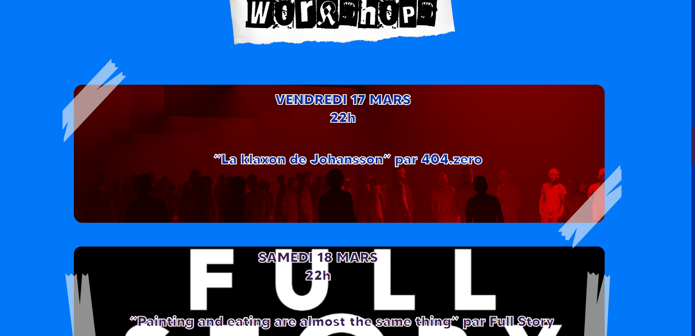
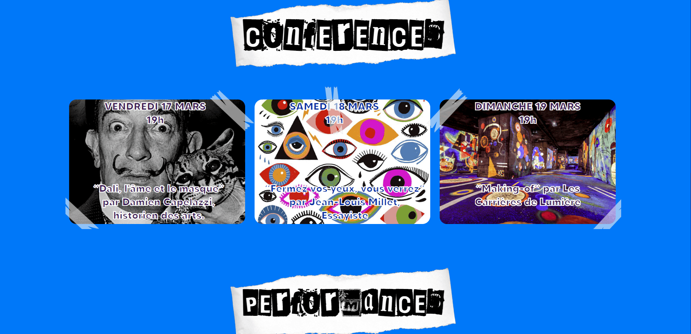
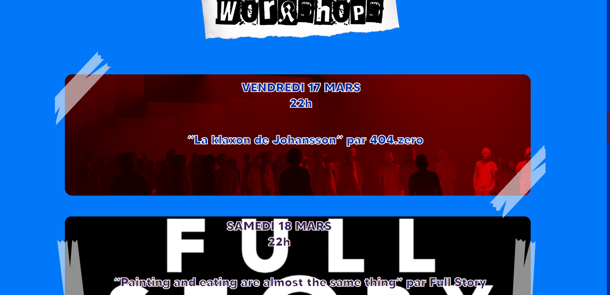
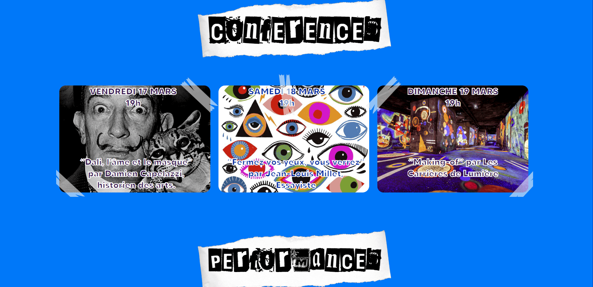
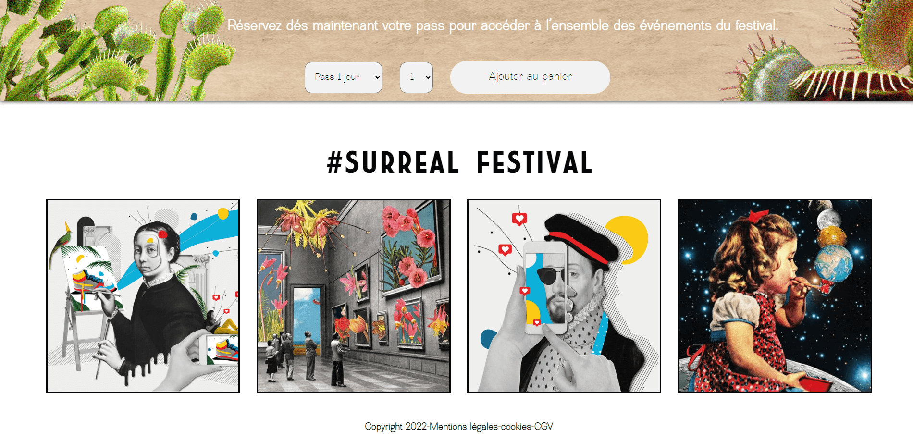
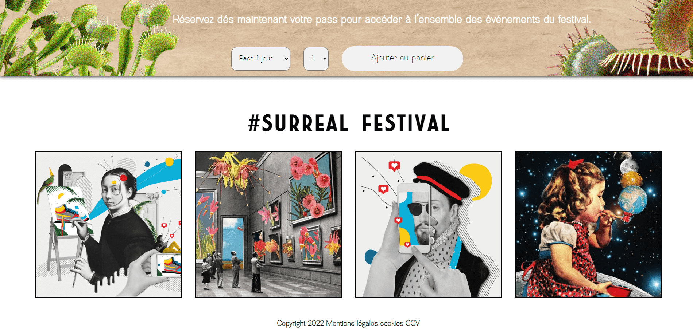

Nous entamons la mise en place de la troisième édition du festival « We are Surreal Festival ». Ce
festival réunit artistes de la scène musicale, artistes digitaux, artistes plasticiens, pour
célébrer l’influence du surréalisme au cœur des œuvres de chacun. Nous proposons alors un programme
varié et éclectique, multi-ethnique, composé de concerts, expositions et conférences.
Le mouvement du surréalisme sera au cœur de nos échanges, de nos découvertes, de nos créations lors
de l’événement. C’est pourquoi nous voulons que la communication liée à l’événement s’inscrive dans
la même démarche créative.
Une affiche, une campagne instagram, une brochure et une landing page de réservation seront
demandées pour le lancement de l’événement. Comme chaque année, nous souhaitons que l’affiche et le
reste de la communication qui en découle mette en valeur le travail de l’artiste invité d’honneur de
l’édition.
Pour la première année, c’est l’artiste Salvador Dali qui était à l’honneur. Puis Erik Johansson
pour la seconde édition.
Cette année, vous aurez à mettre en valeur le travail de Ivan Rod, artiste contemporain choisi pour
illustrer ce mouvement. Son travail met régulièrement en scène des situations et compositions
inattendues, épurées et colorées. Mettant souvent en valeur le principe de collage, ses créations
utilisent régulièrement l’imagerie des affiches vintages tout en leur donnant une dimension
futuriste.
Il est donc de votre ressort de comprendre son travail et ses méthodes pour proposer une affiche en
adéquation avec notre festival, dont les thématiques traitées cette année sont les suivantes :
Révolution verte & NFT.
 





 
